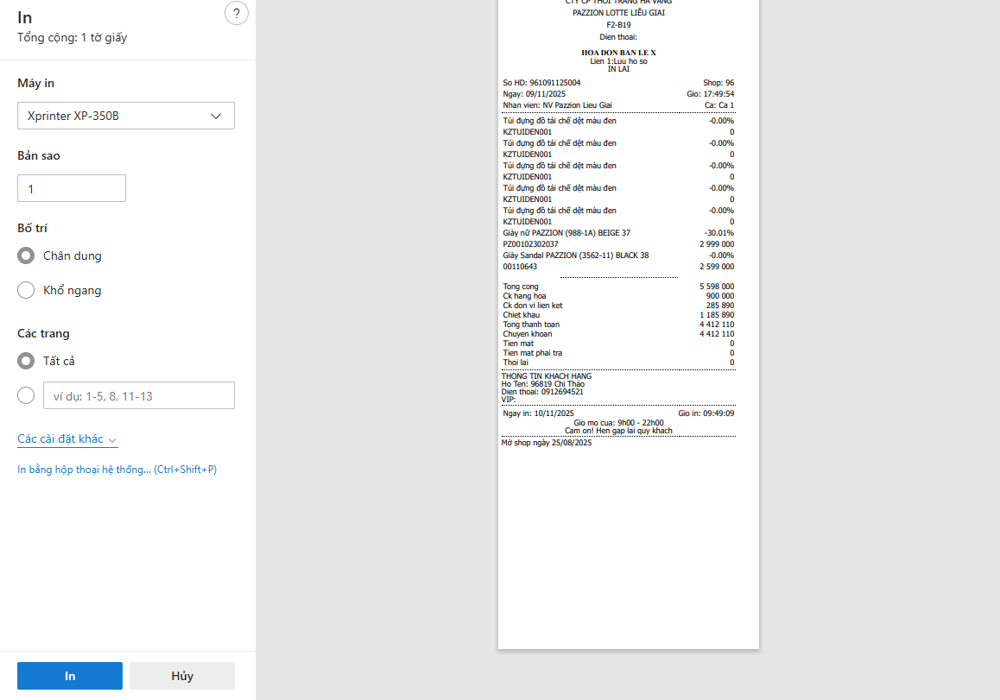
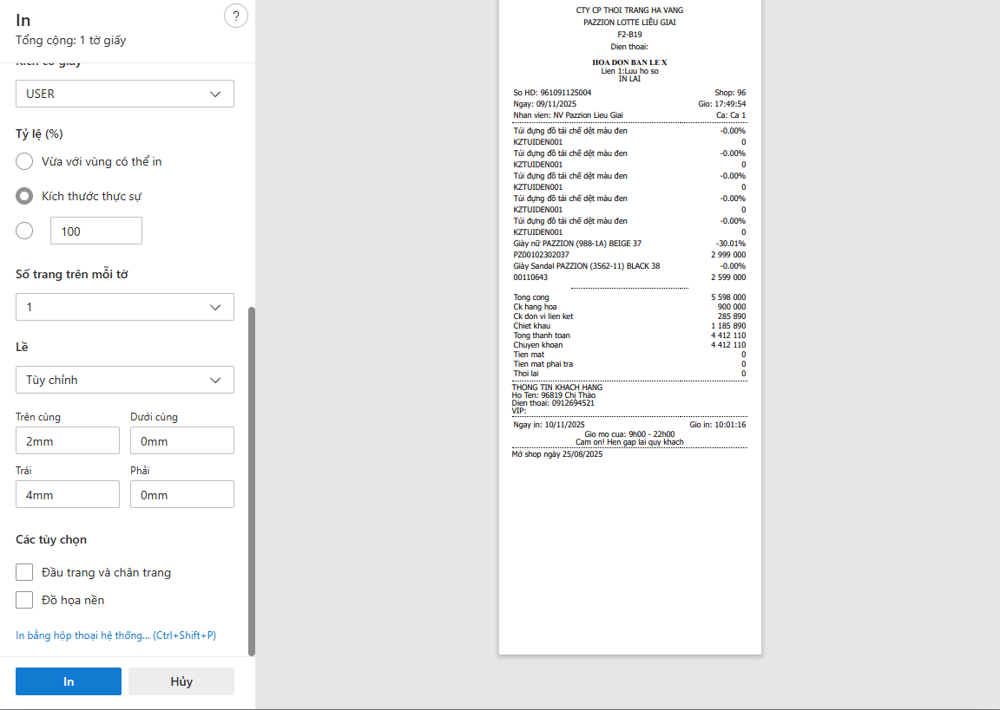
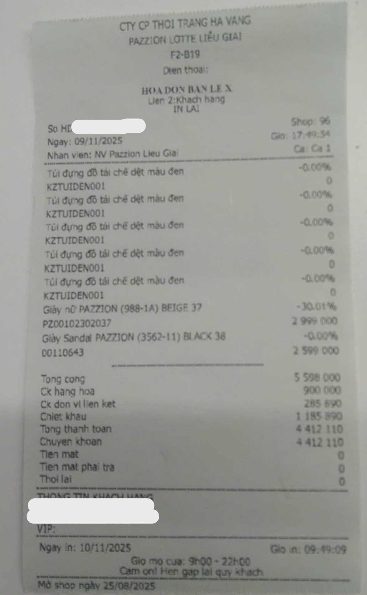

Truy cập trang web bán hàng (FBO) → thử in 1 hóa đơn (chỉ đến phần “In” chứ không in thật). 
Chọn máy in vừa tạo, chỉnh "các cài đặt khác" → Lề → Tùy chỉnh → Trên cùng(top): 2mm → Trái(left): 4mm → In. 
KẾT QUẢ: 
💡 Lưu ý:
ㅤㅤㅤㅤ+ Đảm bảo máy in được kết nối đúng cổng USB và bật nguồn trước khi cài đặt.
ㅤㅤㅤㅤ+ Nên để nguồn chạy suốt thời gian làm việc tránh lãng phí giấy.
ㅤㅤㅤㅤ+ Trước khi bật có thể giữ nút Feed để tiết kiệm giấy (phần test page ít tốn hơn giấy tư động thả trôi).
ㅤㅤㅤㅤ+ Sau khi in bill nên dùng ngón tay để giữ vào phần răng cưa bill trước khi xé để cho bill được tỉa một cách đẹp nhất.